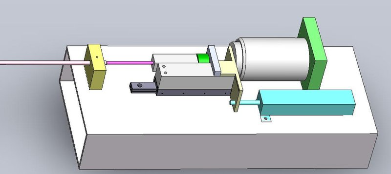

Academic bedside robots · harvard_mccath_kesner2011
Motion-comp. catheter
Harvard motion-compensation catheter system (voice-coil guidewire drive with 3-D ultrasound servoing)

1 / 4


- Family
- Academic bedside robots (academic)
- Devices
- guidewire/instrument sliding in a fixed 85 cm Teflon sheath with steel spring; in vivo 1.5 mm OD guidewire in 1.6 mm ID sheath (TRO 2011 Sec. III, Table I)
- Degrees of freedom
- 1 actuated (fast axial translation); bending and rotation by the clinician with conventional catheter controls
- Push
- Other drives
- Twist
- None
- Tested up to
- Animal
- Sim-to-real
- None found — No simulation-trained controller found for this robot.
Testing
- Highest level
- Animal
- What was tested
- one 75 kg pig, catheter inserted through the top of the left atrium (not through the vasculature), mitral-annulus tracking trials longer than 15 s; number of trials N.R. (TRO 2011 Sec. VII); IJRR 2014: bench force-control runs and water-tank runs under 3DUS against a target moving 12 mm at about 1 Hz (sinusoid and human mitral-annulus trajectory), robotic vs manual Medtronic RF Marinr MCXL catheter (Sec. 4-5, Figs. 16-17)
- Key numbers
- in vivo RMS tracking error below 1.0 mm in all trials (0.77 mm shown) vs above 8 mm without compensation; friction compensation up to 2 N; bench MAE 1.28 -> 0.26 mm (inverse compensation, 1 Hz) and 2.34 -> 0.24 mm (model-based); design targets >= 20 mm travel, >= 210 mm/s, >= 3800 mm/s^2, about 4 N (TRO 2011); IJRR 2014: 1 N contact force held on the moving target under 3DUS with 0.08 N RMS error, 97 % less RMS contact-resistance variation than the manual catheter, force control improved motion tracking by about 20 % (Abstract)
Mechanism
- Push (translation)
- other: voice-coil linear actuator (H2W NCC20-18-02-1X, 50.8 mm travel, 26.7 N peak) on a BX3-3 linear ball slide
- Twist (rotation)
- none (manual); pull-wire bending and guidewire twisting proposed as future DOF (Fig. 18)
- Device range
- sheath ID 1.59-2.38 mm with guidewire OD 0.76-2.23 mm tested (Table I)
- Target anatomy
- intracardiac beating-heart repair (mitral annulus tracking); RF cardiac ablation (kesner2014 Sec. 1-2)
Sensing and interface
- Force sensing
- LCFD-1KG load cell (10 N range) in the drive measures friction; LP-50F potentiometer for position (TRO 2011); IJRR 2014: catheter-tip force sensor, a reflective surface on perpendicular 0.25 mm NiTi flexures read by a fibre-optic transducer, 3D-printed (Objet Connex500), about 5 mm diameter, integrated with the RF ablation electrode, calibrated against an ATI Mini40 (Sec. 2.2, Figs. 4-5)
- Leader and haptics
- linear joystick adds commands to the fast axis; no force feedback reported
- Imaging
- 3-D ultrasound (Philips SONOS 7500, epicardial) with GPU Radon-transform tool tracking; EKF compensates 50-100 ms imaging delay
- Sterility
- N.R.
Size
- Footprint (mm)
- N.R.
- Mass (kg)
- N.R.
Simulation
- Simulation model
- none found
- Sim-trained controller
- none found
Versions
- Lineage
- 2011 ICRA force control of flexible catheter robots for beating-heart surgery (title); 2011 TRO position control with friction and backlash compensation (full, PMC author manuscript); 2014 IJRR robotic catheter cardiac ablation combining 3DUS guidance and force control, new force-sensing RF ablation end effector (full, kesner2014_robotic)
Sources
- Position Control of Motion Compensation Cardiac Catheters · IEEE Transactions on Robotics, 2011 · doi:10.1109/tro.2011.2160467 [kesner2011_position]
- Force control of flexible catheter robots for beating heart surgery · 2011 IEEE International Conference on Robotics and Automation, 2011 · doi:10.1109/icra.2011.5979690 [kesner2011_force]
- Robotic catheter cardiac ablation combining ultrasound guidance and force control · The International Journal of Robotics Research, 2014 · doi:10.1177/0278364913511350 [kesner2014_robotic]
Notes
- Notes
- Proximal drive for one fast DOF; same Harvard group later built the ICE-steering robot (harvard_ice_loschak2017). Boundary case: transatrial, not transvascular. | 2026-11-08 X3: IJRR 2014 read in full: same drive (voice coil NCC20-18-02-1X on a BX3-3 slide, LP-50F), 85 cm Teflon or Nylon sheath with steel-spring guidewire (Sec. 2); no new animal test (validation stays animal from TRO 2011)
This record
- Read level
- full — full (TRO 2011 via PMC HTML; IJRR 2014, ); title (ICRA 2011)
- Picture
- kesner2011_force Fig. 2 (drive system CAD, p. 2), IEEE ICRA 2011, ↗ — licence: publisher copyright (IEEE); grade B
- Picture changes
- native extract (embedded 1179 x 526); no crop; nothing erased; none upscaled
- Found by
- gap: Gap searches for robots the other searches missed.
- Data
- JSON · YAML:
records/robots/harvard_mccath_kesner2011.yaml - Correction
- Suggest a correction [repository not created yet]